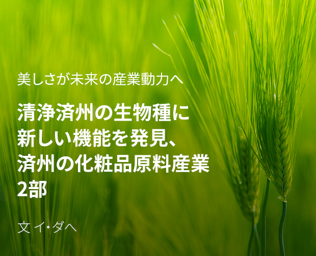
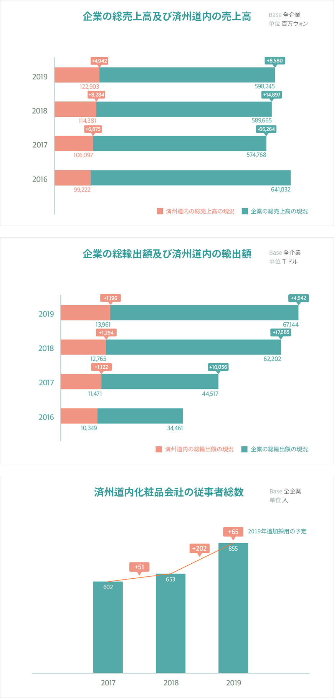
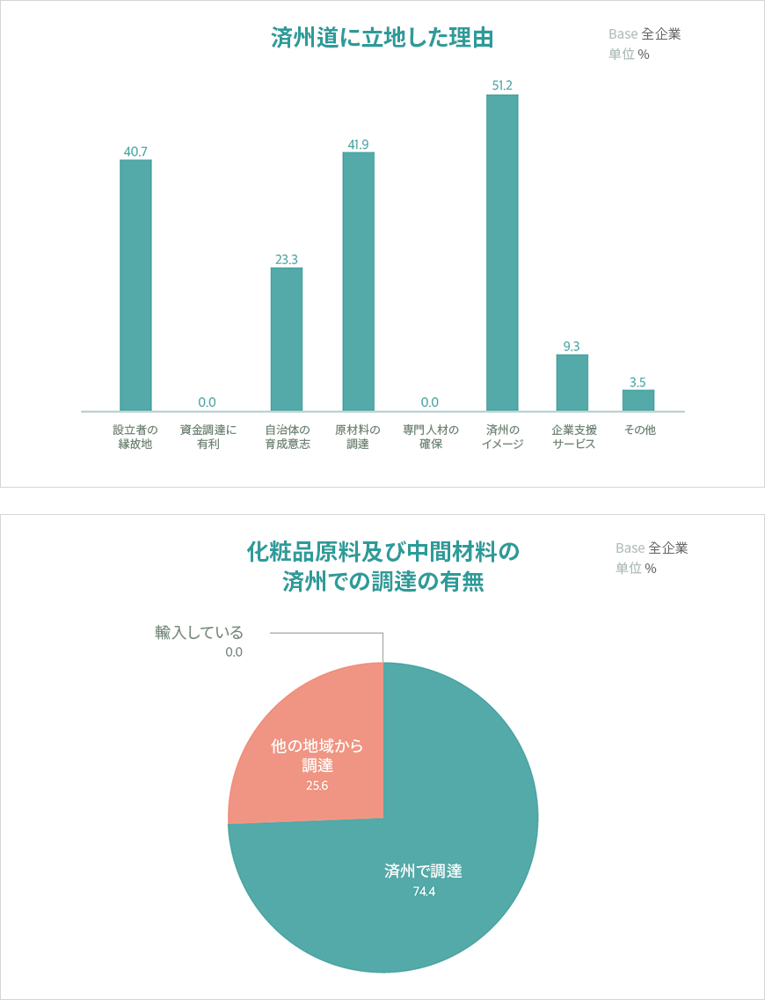

기획취재콘텐츠
- Home
- 제주라이프
- 기획취재콘텐츠
済州の化粧品原料産業 2部새로운 글

済州の化粧品産業の成長
2018年の済州地域化粧品産業の実態調査報告によると、済州道内に所在する化粧品会社は約100社と推定される。その中で済州道に本社を置いた企業は80%に上る。済州道の化粧品会社の売上高及び輸出額は持続的に上昇している。特に輸出額の成長が著しい。産業規模が拡大し、化粧品産業関連従事者数も着実に増加している。済州道内の化粧品会社の従事者総数は2017年602人、2018年653年、2019年855人で、2019年には前年比30%以上の増加を見せた。


企業の総売上高及び済州道内の売上高 (base:全企業, 単位: 百万ウォン)
| 区分 | 済州道内の総売上高の現況 | 企業の総売上高の現況 |
|---|---|---|
| 2019年 | 122,903(+4,942) | 598,245(+8,580) |
| 2018年 | 114,381(+8,284) | 589,665(+14,897) |
| 2017年 | 106,097(+6,875) | 574,768(-66,264) |
| 2016年 | 99,222 | 641,032 |
企業の総輸出額及び済州道内の輸出額 (base:全企業, 単位: 千ドル)
| 区分 | 済州道内の総輸出額の現況 | 企業の総輸出額の現況 |
|---|---|---|
| 2019年 | 13,961(+1,196) | 67,144(+4,942) |
| 2018年 | 12,765(+1,294) | 63,202(+17,685) |
| 2017年 | 11,471(+1,122) | 44,517(+10,056) |
| 2016年 | 10,349 | 34,461 |
済州道内化粧品会社の従事者総数(base:全企業, 単位:人)
2017年 602人, 2018年 653人(+51人), 2019年 855人(+202人), 2019年追加採用の予定(+65人)

済州テクノパークは化粧品産業の成長とともに原料市場も成長したものと考えている。化粧品の製造に必要な原材料及び中間材料の調達を済州内で行ったかを問う調査で、済州で材料を調達していると答えた割合が74.4%で、清浄済州のイメージだけを活用するのではなく済州の原料を積極的に消費していることが分かった。済州に本社があるか支社を設立した会社が済州道を事業立地にした理由についての質問(複数回答)でも、化粧品ブランドとして済州のイメージとのシナジー効果を考慮したという答えが51.2%と最も多く、原材料の調達に有利であるという答えが41.9%で2位となった。

済州道に立地した理由 (base:全企業, 単位:%)
- 設立者の縁故地 40.7%
- 資金調達に有利 0%
- 自治体の育成意志 23.3%
- 原材料の調達 41.9%
- 専門人材の確保 0%
- 済州のイメージ 51.2%
- 企業支援サービス 9.3%
- その他 3.5%
化粧品原料及び中間材料の済州での調達の有無 (base:全企業, 単位 %)
済州で調達 74.4%, 他の地域から調達 25.6%, 輸入している 0%

このように化粧品産業に強固に築かれた清浄という済州のイメージと高機能の多様な自然原料の供給元として済州が持つ化粧品原料産業と化粧品産業の可能性は計り知れない。化粧品産業はイメージの構築とブランド価値によって価値が最大化する高付加価値産業であり、化粧品産業の中でも化粧品原料産業は技術集約的な産業であるため、多様な生物種の研究と開発において先頭に立てば、食品及び化粧品原料技術の先進地域としても、より大きな付加価値を作り出すことができると関係者は言う。
済州産化粧品原料及び化粧品産業の活性化に向けた動き
済州特別自治道は地域戦略事業として健康・ビューティー生物産業(香粧品、食品、海洋バイオなど)を育成してきた。 済州バイオ産業のけん引役を担う済州テクノパークは健康・ビューティー生物産業の育成やバイオサイエンスパーク造成事業などを推進している。2004年には韓国で初めて自治体が化粧品工場を設立してCGMP認証(cosmetic GMP:2005、12月)を獲得し、済州所在の化粧品会社の基礎化粧品、機能性化粧品、パック、シャンプーなど約300万の香粧品の生産を支援した。
済州テクノパーク（JTP）は2007年6月に化粧品生産工場を完成して運営中である。2019年11月には清浄資源の化粧品原料や産業化インフラの構築及び化粧品原料素材産業の育成に向けた「化粧品原料産業化協議体」を構成し、本格的な活動に乗り出した。化粧品原料産業化協議体には全国の化粧品と化粧品原料素材関連企業、大学、研究機関、公共機関などが参加し、済州産原料で製品を開発するための素材情報と製品化のコンサルティング支援、済州化粧品原料認証のコンサルティング支援、専門人材の育成及び技術と情報の交流、化粧品原料の生産支援など、化粧品原料の開発と産業化に必要な支援を提供している。
なお、済州産化粧品原料の使用拡大と済州産化粧品のブランドイメージを向上させるために、済州化粧品認証制度(JCC、Jeju Cosmetic Cert)を運営している。済州化粧品認証は済州産化粧品原料を5～10%以上含有し、済州道で生産した製品であることを済州道知事が証明する公式認証制度だ。イニスフリーやLG生活健康などの大企業の製品から済州道に本社を置いた中小企業の製品まで計32社の約150製品が済州化粧品認証を獲得した。
化粧品原料産業、済州の未来のメインビジネスとして浮上
化粧品原料産業は済州の未来のメインビジネスとして飛躍中である。化粧品原料の研究開発及び実証事業で化粧品原料産業はもちろん、バイオ産業の先進地域としても発展しようとしている。済州の代表産業である観光産業との連携も可能だ。イニスフリーは化粧品ブランドとローカルコンテンツを結合し、地域観光産業の活性化に貢献してきた。西広茶園とオーソルロク・ティーミュージアムは済州旅行の必須コースとして知られている。 K-ビューティーの人気と、済州産原料と済州のイメージをブランドストーリーとして掲げた化粧品ラインの成功によって海外からの観光客が済州に興味を持つことになり、K-ビューティーの旅行地としてさらに注目されることになった。これを受けて済州椿村やビジャ村、カメリアヒル、加波島など済州の美しい村と島にも新たに関心が集まった。
「済州の優秀な化粧品原料への関心と韓国化粧品ブランドの海外市場での人気を受けて、中国など海外OEM企業が済州産原料をその目で確かめるために見学に来るなど、原料産業の波及力は徐々に強くなっています。バイオ技術の力量を強化し、多様な生物種が自生するというメリットを生かして化粧品原料を技術集約産業として育てていけばその潜在力は十分大きいと言えます。」(済州テクノパーク キム・ボンソク化粧品産業チーム長)
済州にはまだ見つかっていない清浄自然原料がいたるところに息づいている。海と陸に自生する多様な生物種、済州の地形的な特性の中で成長した済州固有の生物種などは引き続き研究され、発見されると思われる。化粧品原料産業が済州の未来のメインビジネスとして大きく注目されている理由だ。
이전글